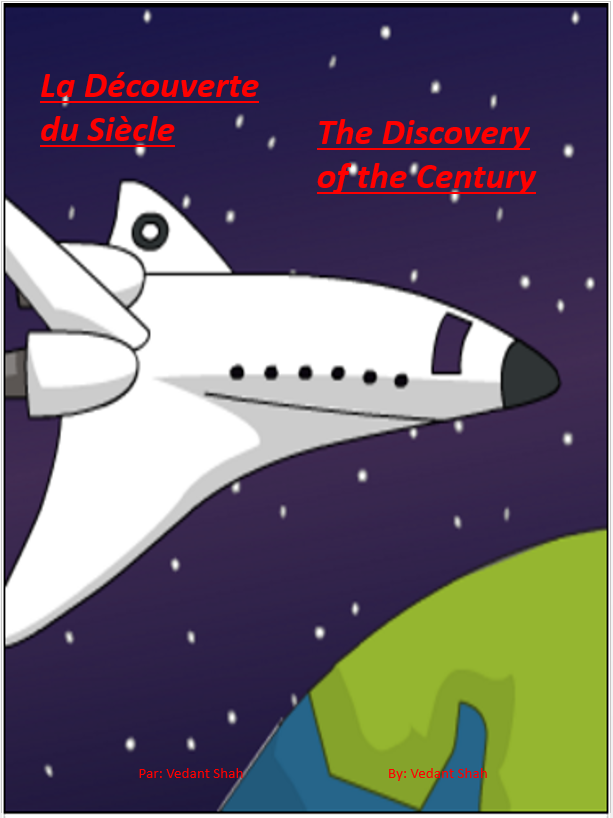
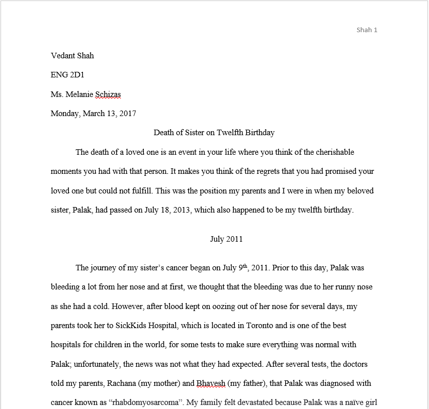
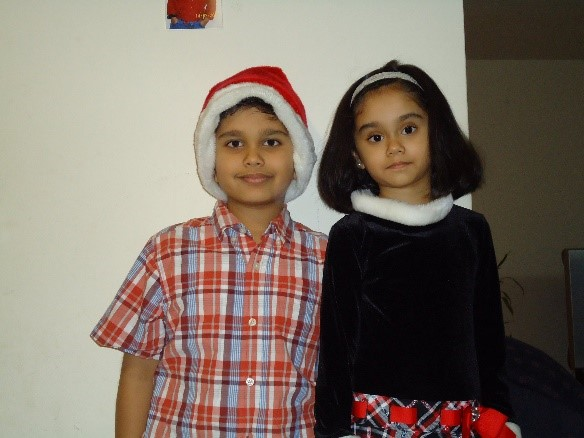
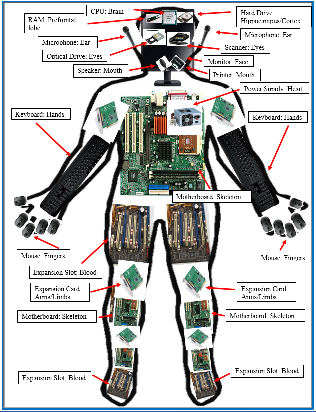
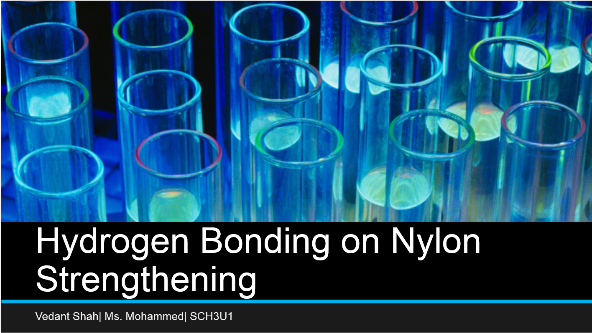
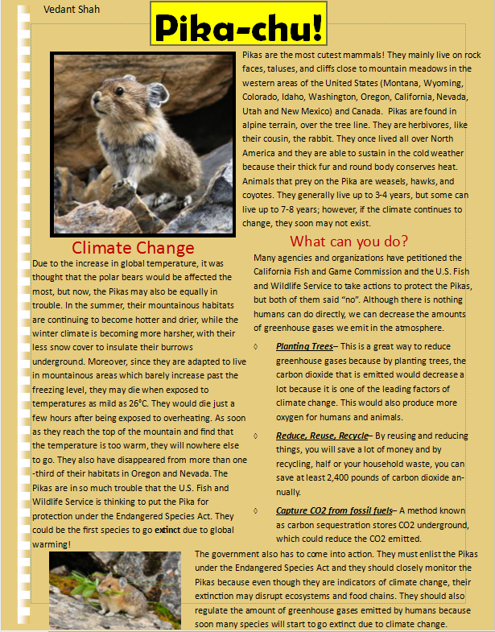

Now, I would like to show you some of the assignments and projects I have completed during my school years. I am proud of who I am today and these
assignments are a showcase of that. I hope you admire these assignments and that they are useful to you if you would like to utilize them. Here is a list of
my assignments and projects with the documents:

This is my culminating assignment for French that I made in grade 10, first semester. This is a book about a
young boy who faces several obstacles in life but overcomes them and works for the company he had dreamed to work for as a child. The message of the book I want others to understand is that success will not come without failure and that you have to work hard in life to ensure a good future.
I am very proud of this book because it is my first book that is being published, which release in May. We made these books because it was a way to understand ourselves
a lot better and to learn about ourselves. The book is meant to be for elementary school children and I hope that my book
inspires them to be what they want in life. I am also in the process of making another book with some of my peers in my English class.
Be ready to be amazed!
This next assignment I have made is a game on Scratch which I made about one to two weeks ago. The name of my game is Mario and Luigi:Together We Win.
My class was able to make a game on anything they wanted to and I decided to create a game that made my childhood exciting, which was Mario Brothers.
I have played Mario Bros. for about eight-nine years and I played it on the Nintendo DS and the Wii. For this game, I decided to add
a few jokes such as an April Fools joke. There are several twists in the game as well, but this will be a game you will enjoy. Also, creating this game was taught me many things about programming, such as how your codes have to be clean and neat because if it is disorganized and there is an error, it would be hard to find what the problem would be.
Coding this game has taught me how to think effectively because when you are coding something, you need to think of the user-experience as other people will be interacting with your game. Here are a few rules you
need to know to play this game:
Press "up arrow" (jump), "right arrow", and left arrow" to move.
Press "O" or Space for power-ups.
Avoid the piranha plants, mushrooms, and the dangerous Bowser.
Most importantly, you should have fun playing this game.

The third assignment is an English assignment where I had to make a memoir (a memoir is a set of events or a specific event which changes your life) of a particular event that occurred in life,
which was the death of my great sister, Palak Shah. Palak was an amazing sister and I miss her a lot. This memoir will talk about the entire journey of her cancer and what my family and I went through.
There are also a few lessons that you can learn and I hope you can find all of them as it could help you in the future. Also, you should
create your own memoir as it can teach a lot of things about you that you did not know, similar to me. I decided to make the memoir on my sister because I wanted to express myself of what I went through
and how I felt. I also made this because I wanted other people to have support who lost their beloved one that they are not alone and they will always be loved.

This a resume that I created in 2016 for my summer school course, Civics and Careers. I think making a resume is very useful because
it can help you anytime when you are applying for a job. I am proud of this resume because it helped me apply for a job and it has taught me some skills that will assist me when
I make a more professional resume. My own resume has taught me that it is not very strong and needs to be made better because there are a few errors. This will help me in the future. Lastly, a tip I would like to give is whenever you create
a resume, always make sure it is concise, free of grammatical and spelling errors, and it should be your best work because it is your one and only chance to impress your employer.
This next assignment I have made was the first program I made with Scratch. The name of my program is Scratch101.
I was pleased by what I made because it was my first exposure to programing of any sort and the experience was exhausting and exciting because
it took some time to solve problems that occurred in the program. There were also some things I did not understand but after some time, I fixed the problems.
To me, that is very important because it taught me problem-solving skills and how to program. I hope you enjoy what I have made and there are few
instructions in order to control the characters:
When you click "Up Arrow", Tom the Cat will move ten steps and change his costume.
When you click "Down Arrow", Tom the Cat will ask you your name and move fifteen steps.
When you click "Right Arrow", Tom the Cat will move forty steps and play the drum.
When you click "Left Arrow", Tom the Cat will move forty steps and play a new type of instrument.
When you click "W", Robby the Robot will go back to his home and play claves for his return to Mars.
When you click "A", Robby the Robot will create a clone of him and will tell you a secret of Tom the Cat.
When you click "S", Robby the Robot will go to the sparkling room where a ballerina is practicing for her big recital.
When you click "D", Robby the Robot will move fifteen steps and play a "popping" sound. He is very clever.
When you click "J", the ballerina will show you her beautiful dance.
When you click the Spacebar, Batman will tell you a very funny joke. He loves jokes.
When you click the green flag, it will reset the positions of the sprites.
Enjoy and have fun!

This assignment is a project I created for my ICS class. The objective of the assignment was to use our knowledge and understanding
of internal and external hardware to create a Cyborg: a human being made partly out of computer parts.
We were required to incorporate the internal and external parts of the computer onto the image of person to create the Cyborg.
However, each computer part which we were required to add had to replace a similar function on a human being. I enjoyed this assignment because it has taught me
the links computer parts had to physical characteristics of the human body. Also, my knowledge on the parts of the hardware also increased because
there were some things that I did not know but this assignment provided me with extra knowledge on the hardware components of a computer.

Chemistry is one of my favourite courses and since I am in a program called HMST (Honours, Mathematics, Science, and Technology), it is
a course that is mandatory. I was required to make a presentation about hydrogen bonding and how the phenomena affects strenthening of nylon.
Hydrogen bonding is a very special type of intermolecular force through water molecules. The definition of a hydrogen bond is: “an unusually
strong dipole-dipole force between a hydrogen atom attached to a highly electronegative atom (N, O, or F) and a highly electronegative atom in another molecule. Although
this may sound a bit confusing, by viewing my presentation, I believe you will understand how hydrogen bonding works and it is connected to the strenthening of nylon.

Lastly, this was a project that I made for my grade 10 science class. My class was required to make a poster about an endangered species
and talk about why they are endangered. I decided to do the Pika, which is a cousin of the rabbit, because Pikas are animals that many have not heard
of and they need a lot of help. I like my project because I am able to educate others how this animal is endangered and that people and governments must act
to protect it. Pikas are mainly endangered because their mountainous habitats are continuing to become hotter and drier, while the winter climate is becoming more harsher, they have less snow cover to insulate their burrows underground.
This causes them to retreat to the top of mountains and if they feel that the top of mountains are too warm, Pikas may start dying. I hope you like this animal as it very cute and I also hope you can do something to protect the species of Pika.